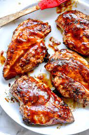

Barbecue chicken

Description
This homemade BBQ sauce recipe for chicken in not-too-sweet, not-too-tangy, and finishes in almost a glaze. Everyone loves it! It would also be great on pork chops or ribs.
Ingredients
- 1 tablespoon olive oil
- 1/4 cup diced onion
- 2 cloves garlic, minced
- 5 tablespoons ketchup
- 3 tablespoons honey
- 3 tablespoons brown sugar
- 1 tablespoon Worcestershire sauce
- salt and pepper to taste
- 2 boneless, skinless chicken breasts
- Preheat a grill for medium heat and oil the grate.
- Heat olive oil in a skillet over medium heat. Add onion and garlic, sauté until tender, about 2 minutes. Stir in ketchup, honey, brown sugar, Worcestershire sauce, salt and pepper, simmer for about 2 minutes. Remove from heat.
- Dip chicken in sauce for both sides, reserve remaining sauce in the skillet. Transfer chicken onto the preheated grill and cook until browned, about 15 minutes
- Return chicken to skillet, simmer over medium heat until sticky, about 5 minutes each side.